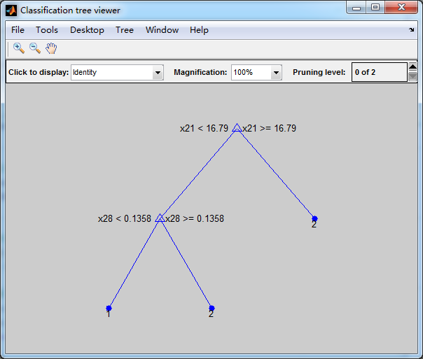

Contents
I. 清空环境变量
clear all clc warning off
II. 导入数据
load data.mat
1. 随机产生训练集/测试集
a = randperm(569); Train = data(a(1:500),:); Test = data(a(501:end),:);
2. 训练数据
P_train = Train(:,3:end); T_train = Train(:,2);
3. 测试数据
P_test = Test(:,3:end); T_test = Test(:,2);
III. 创建决策树分类器
ctree = ClassificationTree.fit(P_train,T_train);
1. 查看决策树视图
view(ctree); view(ctree,'mode','graph');
Decision tree for classification 1 if x21<16.79 then node 2 elseif x21>=16.79 then node 3 else 1 2 if x28<0.1603 then node 4 elseif x28>=0.1603 then node 5 else 1 3 if x7<0.07214 then node 6 elseif x7>=0.07214 then node 7 else 2 4 if x28<0.1358 then node 8 elseif x28>=0.1358 then node 9 else 1 5 if x22<23.47 then node 10 elseif x22>=23.47 then node 11 else 2 6 if x2<18.835 then node 12 elseif x2>=18.835 then node 13 else 2 7 class = 2 8 if x11<1.04755 then node 14 elseif x11>=1.04755 then node 15 else 1 9 if x2<20.785 then node 16 elseif x2>=20.785 then node 17 else 1 10 class = 1 11 class = 2 12 class = 1 13 if x5<0.076425 then node 18 elseif x5>=0.076425 then node 19 else 2 14 if x14<38.605 then node 20 elseif x14>=38.605 then node 21 else 1 15 class = 2 16 if x24<811.1 then node 22 elseif x24>=811.1 then node 23 else 1 17 class = 2 18 class = 1 19 class = 2 20 class = 1 21 if x6<0.05957 then node 24 elseif x6>=0.05957 then node 25 else 1 22 class = 1 23 class = 2 24 class = 2 25 if x11<0.4212 then node 26 elseif x11>=0.4212 then node 27 else 1 26 class = 2 27 class = 1
IV. 仿真测试
T_sim = predict(ctree,P_test);
V. 结果分析
count_B = length(find(T_train == 1)); count_M = length(find(T_train == 2)); rate_B = count_B / 500; rate_M = count_M / 500; total_B = length(find(data(:,2) == 1)); total_M = length(find(data(:,2) == 2)); number_B = length(find(T_test == 1)); number_M = length(find(T_test == 2)); number_B_sim = length(find(T_sim == 1 & T_test == 1)); number_M_sim = length(find(T_sim == 2 & T_test == 2)); disp(['病例总数：' num2str(569)... ' 良性：' num2str(total_B)... ' 恶性：' num2str(total_M)]); disp(['训练集病例总数：' num2str(500)... ' 良性：' num2str(count_B)... ' 恶性：' num2str(count_M)]); disp(['测试集病例总数：' num2str(69)... ' 良性：' num2str(number_B)... ' 恶性：' num2str(number_M)]); disp(['良性乳腺肿瘤确诊：' num2str(number_B_sim)... ' 误诊：' num2str(number_B - number_B_sim)... ' 确诊率p1=' num2str(number_B_sim/number_B*100) '%']); disp(['恶性乳腺肿瘤确诊：' num2str(number_M_sim)... ' 误诊：' num2str(number_M - number_M_sim)... ' 确诊率p2=' num2str(number_M_sim/number_M*100) '%']);
病例总数：569 良性：357 恶性：212 训练集病例总数：500 良性：310 恶性：190 测试集病例总数：69 良性：47 恶性：22 良性乳腺肿瘤确诊：46 误诊：1 确诊率p1=97.8723% 恶性乳腺肿瘤确诊：20 误诊：2 确诊率p2=90.9091%
VI. 叶子节点含有的最小样本数对决策树性能的影响
leafs = logspace(1,2,10); N = numel(leafs); err = zeros(N,1); for n = 1:N t = ClassificationTree.fit(P_train,T_train,'crossval','on','minleaf',leafs(n)); err(n) = kfoldLoss(t); end plot(leafs,err); xlabel('叶子节点含有的最小样本数'); ylabel('交叉验证误差'); title('叶子节点含有的最小样本数对决策树性能的影响')
VII. 设置minleaf为28，产生优化决策树
OptimalTree = ClassificationTree.fit(P_train,T_train,'minleaf',28); view(OptimalTree,'mode','graph')
1. 计算优化后决策树的重采样误差和交叉验证误差
resubOpt = resubLoss(OptimalTree) lossOpt = kfoldLoss(crossval(OptimalTree))
resubOpt =
0.0640
lossOpt =
0.0980
2. 计算优化前决策树的重采样误差和交叉验证误差
resubDefault = resubLoss(ctree) lossDefault = kfoldLoss(crossval(ctree))
resubDefault =
0.0060
lossDefault =
0.0860
VIII. 剪枝
[~,~,~,bestlevel] = cvLoss(ctree,'subtrees','all','treesize','min') cptree = prune(ctree,'Level',bestlevel); view(cptree,'mode','graph')
bestlevel =
3
1. 计算剪枝后决策树的重采样误差和交叉验证误差
resubPrune = resubLoss(cptree) lossPrune = kfoldLoss(crossval(cptree))
resubPrune =
0.0200
lossPrune =
0.0740